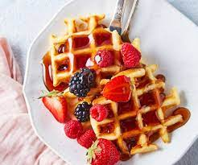

Classic Waffles

Description
Waffles are a soft and crispy treat to have for breakfast that we can acompany with many other foods like fruits, eggs, chocolate among others.THey are often served with butter and maple syrup and eaten fresh out of the pan every morning among americans
Ingridients
- Flour
- Salt
- Baking Powder
- Sugar
- Eggs
- Milk
- Butter
- Vanila Extract
Steps
- In a large bowl, mix together flour, salt, baking powder and sugar; set aside. Preheat waffle iron to desired temperature
- In a separate bowl, beat the eggs. Stir in the milk, butter and vanilla. Pour the milk mixture into the flour mixture; beat until blended.
- Ladle the batter into a preheated waffle iron. Cook the waffles until golden and crisp. Serve immediately.